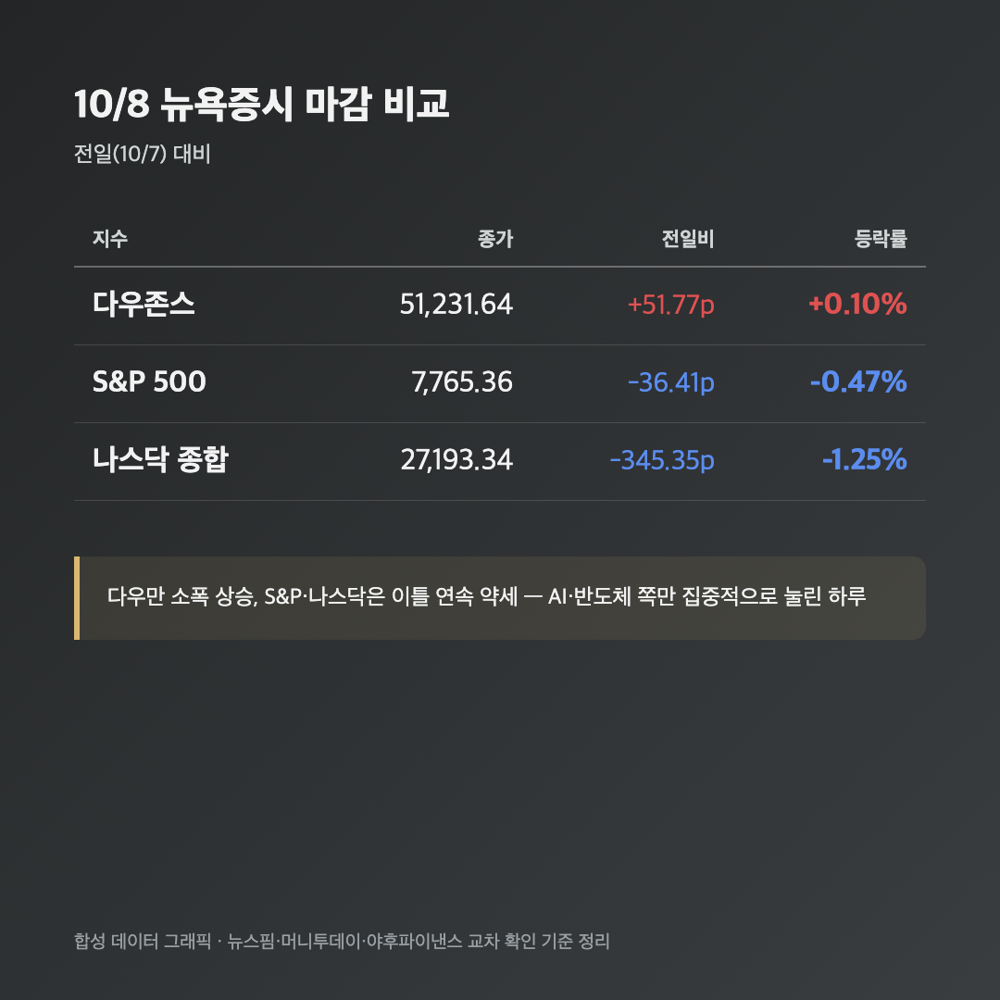
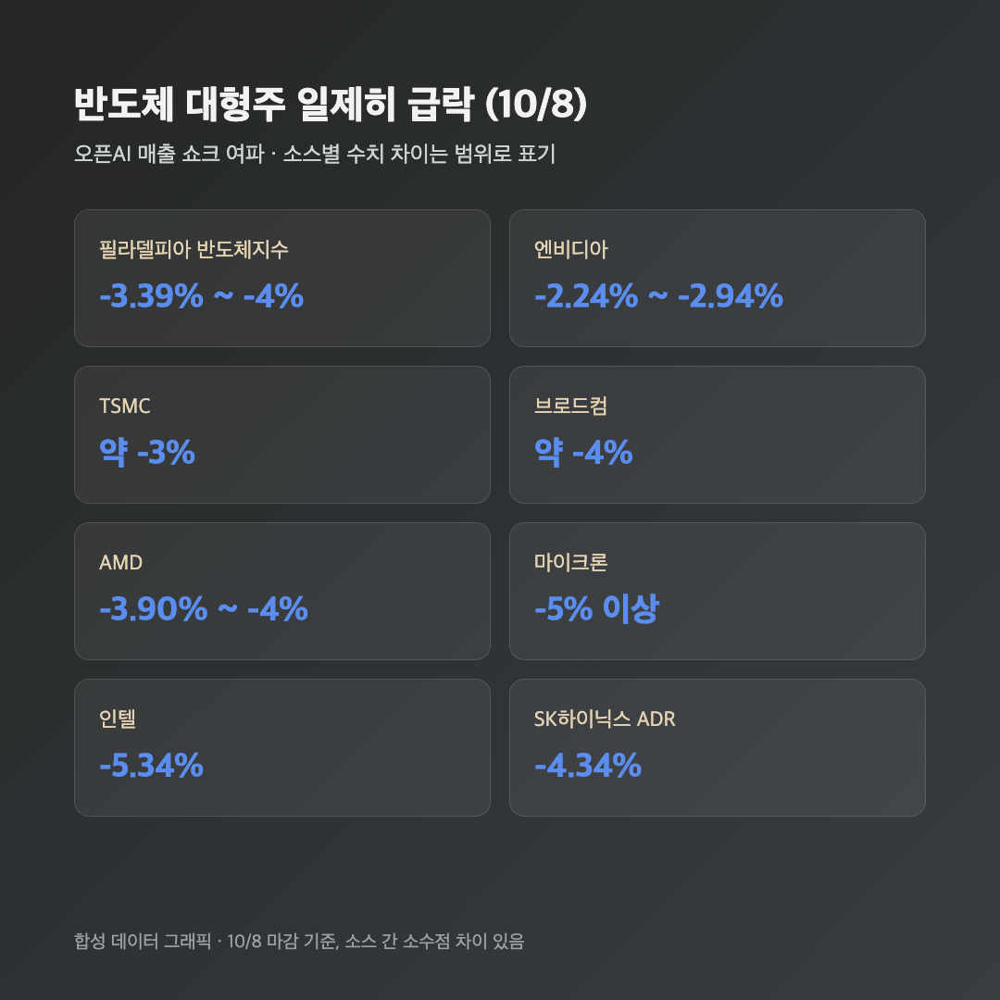
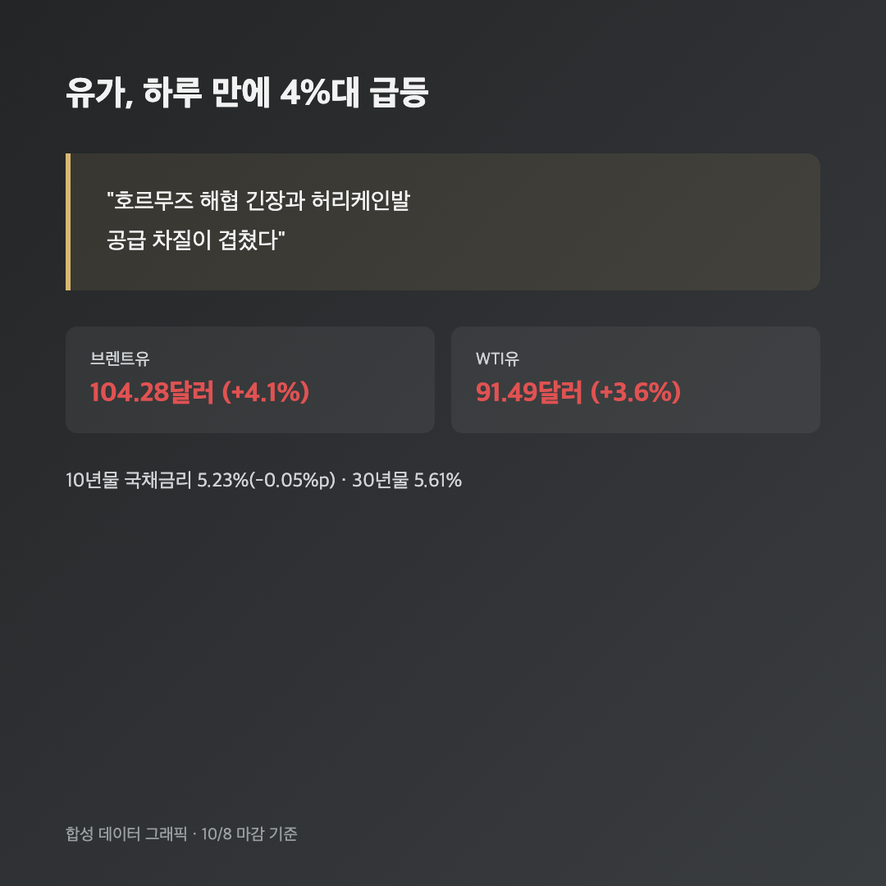

오픈AI 연환산 매출이 사실 500억 달러밖에 안 된다는 보도 하나에, 밤새 반도체주가 다 같이 흔들렸어요. 어제 국장 글에서는 "삼성전자 영업이익 107조인데 왜 주가는 빠지나"를 썼었는데, 밤 지나고 보니 미장도 비슷한 종류의 아이러니였습니다 — 숫자 하나가 기대보다 낮다는 소식만으로 AI 랠리 전체가 흔들리더라고요.
📉 다우만 홀로 상승, S&P·나스닥은 이틀째 약세
|
다우존스 51,231.64 (+51.77포인트, +0.10%) / S&P 500 7,765.36 (-36.41포인트, -0.47%) / 나스닥 종합 27,193.34 (-345.35포인트, -1.25%) |

| 지수 | 종가 | 등락 |
|---|---|---|
| 다우존스 | 51,231.64 | +51.77포인트 (+0.10%) |
| S&P 500 | 7,765.36 | -36.41포인트 (-0.47%) |
| 나스닥 종합 | 27,193.34 | -345.35포인트 (-1.25%) |
세 지수가 완전히 다른 방향으로 갔어요. 다우는 소폭이지만 올랐고, S&P는 약보합, 나스닥만 1.25%나 빠졌습니다. 다우에는 AI·반도체 비중이 상대적으로 적다 보니, 오늘 하락의 성격이 "지수 전체가 흔들린 날"이 아니라 "AI·반도체 쪽만 집중적으로 맞은 날"이라는 걸 이 지수 차이가 그대로 보여주는 것 같아요.
🤖 오픈AI 매출, 알려진 것보다 훨씬 적었다는 보도
|
오픈AI 9월말 기준 연환산 매출 약 500억 달러 — 이전 알려진 수치보다 크게 낮음 |
영국 파이낸셜타임스(FT)가 오픈AI가 투자자들에게 제시한 연환산 매출이 약 500억 달러라고 보도했는데요, 이게 그동안 시장에 알려졌던 수치보다 한참 낮았다는 게 핵심이에요. 다만 "그동안 알려졌던 수치"가 정확히 얼마였는지는 소스마다 달라요 — 어떤 매체는 680억 달러(180억 달러 차이)라고 했고, 다른 매체는 700억 달러(200억 달러 차이)라고 전했습니다. 정확한 이전 추정치가 뭐였는지는 저도 헷갈리는데, "실제가 알려진 것보다 꽤 낮다"는 방향 자체는 모든 소스가 같아서 그 부분만 믿을게요.
이 보도 하나가 "AI 인프라에 쏟아붓는 투자 규모에 비해 실제 서비스 매출이 그걸 받쳐줄 수 있나"라는, 그동안 계속 있었던 거품론을 다시 수면 위로 끌어올린 셈이에요. "역시 AI주 벨류에이션이 과하긴 했구나" 싶으면서도, 동시에 "매출 숫자 하나로 이렇게까지 흔들릴 일인가" 싶기도 하더라고요.
🔧 반도체주 일제히 급락, SK하이닉스 ADR도 -4.34%

| 종목 | 등락률 |
|---|---|
| 필라델피아 반도체지수 | -3.39% ~ -4% |
| 엔비디아 | -2.24% ~ -2.94% |
| TSMC | 약 -3% |
| 브로드컴 | 약 -4% |
| AMD | -3.90% ~ -4% |
| 마이크론 | -5% 이상 |
| 인텔 | -5.34% |
| SK하이닉스 ADR | -4.34% |
등락률이 소스마다 소수점 단위로 조금씩 달라서 범위로 적어뒀는데, 방향은 전부 "급락"으로 일치해요. 저는 이 표에서 SK하이닉스 ADR -4.34%가 가장 눈에 들어왔는데요, 25주짜리 제 삼성전자도 반도체 대형주라 이 흐름에서 자유롭지 않거든요. 어제 국장에서 삼성전자가 역대급 실적 발표하고도 주가가 빠졌는데, 오늘 미장 반도체 분위기까지 이러니 내일 국장도 또 흔들리지 않을까 싶어서 솔직히 걱정이 좀 됩니다.
🛢️ 유가 4%대 급등, 호르무즈 해협·허리케인이 겹쳤어요
|
브렌트유 104.28달러 (+4.1%) / WTI 91.49달러 (+3.6%) |

호르무즈 해협 인근 선박 공격 관련 긴장과 허리케인으로 인한 공급 차질이 겹치면서 유가가 하루 만에 4%대로 뛰었어요. 다만 트럼프 대통령이 "중간선거 전에는 이란을 공격하지 않겠다"고 언급했다는 보도도 있어서, 지정학적 긴장이 더 커지는 건 일단 주춤해진 분위기라고 해요. 유가가 오르면 물가·금리 부담도 같이 커지는 구조라 지수 쪽에도 부담으로 작용했다는 시각이 많았습니다.
금리 쪽은 10년물이 5.23%(-0.05%p)로 오히려 소폭 내렸고 30년물은 5.61%였어요. 어제까지 계속 올랐던 금리가 오늘은 쉬어가는 모양새였는데, 유가가 더 튀면 다시 밀릴 수도 있을 것 같아서 계속 지켜봐야 할 것 같아요.
🧾 그 외 짚을 것들
신규 실업수당 청구 건수가 197,000건으로 줄면서 고용시장은 여전히 괜찮다는 신호가 나왔어요. 펩시코는 실적은 예상치를 상회했는데 연간 가이던스는 낮춰서 주가는 +3.73%로 올랐고(어닝 서프라이즈+가이던스 하향이 같이 가는 묘한 조합이었죠), 스타벅스는 -0.40%로 소폭 약세였습니다.
마무리하며
오늘 미장은 다우 +0.10%, S&P -0.47%, 나스닥 -1.25%. 오픈AI 매출이 알려진 것보다 낮다는 보도 하나에 반도체주가 다 같이 흔들린 하루였고, 유가는 중동 긴장에 4%대로 튀었어요.
솔직히 요즘 들어 "AI 거품론"이 나올 때마다 반도체주가 이렇게 한 번씩 출렁이는 패턴이 반복되는 느낌인데요, 25주짜리 제 삼성전자 입장에서는 매번 남 일 같지가 않네요. 그래도 숫자 하나에 일일이 흔들리기보다는 내일 국장 열리면 실제로 어떻게 반응하는지 보고 판단하려고요. 오늘도 물려있지만, 내일은 또 내일 봐야죠 🌱